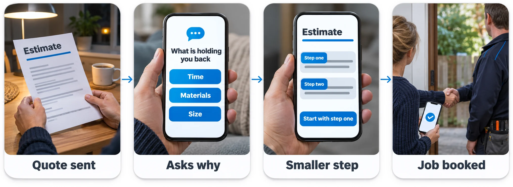
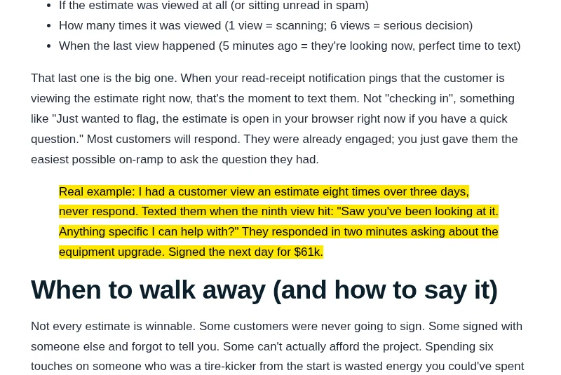

Talk Through Quotes




- Problem
- I send the quote, the customer goes quiet, and I never learn why.
- Who has it
- Providers who send estimates by email or text.
- What people say
- “I had a customer view an estimate eight times over three days, never respond.” Workhand blog, workhand.app, 2026-05-21

Open the post